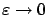
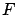

Next: 5.3.3 HJB equation and
Up: 5.3 Viscosity solutions of
Previous: 5.3.1 One-sided differentials
Contents
Index
5.3.2 Viscosity solutions of PDEs
We are now ready to introduce the concept of a viscosity solution for PDEs.
Consider a PDE of the form
 |
(5.30) |
where
 is a continuous function.
A viscosity subsolution of the
PDE (5.34)
is
a continuous function
is a continuous function.
A viscosity subsolution of the
PDE (5.34)
is
a continuous function
 such that
such that
 |
(5.31) |
As we know, this is equivalent to saying that at every  we must have
we must have
 for every
for every
 test
function
test
function  such that
such that  has a local minimum at
. Similarly,
has a local minimum at
. Similarly,  is a
viscosity supersolution of (5.34) if
is a
viscosity supersolution of (5.34) if
 |
(5.32) |
or, equivalently, at every
we have
 for every
function
such that
has a local maximum at
. Finally,
is a viscosity
solution if it is both a viscosity subsolution and a viscosity supersolution.
for every
function
such that
has a local maximum at
. Finally,
is a viscosity
solution if it is both a viscosity subsolution and a viscosity supersolution.
The above definitions of a viscosity subsolution and supersolution impose conditions on
only
at points where  , respectively
, respectively  , is nonempty. We know that the
set of these points is dense in the domain of
.
At all points where
is differentiable, the PDE must hold in the classical
sense. If
is Lipschitz, then by Rademacher's theorem it is differentiable almost everywhere.
, is nonempty. We know that the
set of these points is dense in the domain of
.
At all points where
is differentiable, the PDE must hold in the classical
sense. If
is Lipschitz, then by Rademacher's theorem it is differentiable almost everywhere.
![\begin{Example}
Consider the scalar case ($n=1$) and let $F(x,v,\xi)=1-\vert\xi\...
...or all $\xi\in[-1,1]$, making~\eqref{e-supersol} true as well.~\qed\end{Example}](img1735.gif)
Note the lack of symmetry in the definition of a viscosity solution: the sign convention used when writing the PDE is important.
In the above example, if we rewrite the PDE as
 , then it is easy to see that
, then it is easy to see that  is no longer a viscosity solution.
is no longer a viscosity solution.
The terminology ``viscosity solutions" is motivated by the fact that a viscosity solution
of the PDE (5.34) can be obtained
from smooth solutions
 to the family of PDEs
to the family of PDEs
 |
(5.33) |
(parameterized by
 )
in the limit as
)
in the limit as

. The operator  on the right-hand side of (5.37) denotes the Laplacian (
on the right-hand side of (5.37) denotes the Laplacian (
 ); in fluid mechanics it appears in the PDE describing the motion of a viscous fluid. To understand the basic idea behind this convergence result, let
); in fluid mechanics it appears in the PDE describing the motion of a viscous fluid. To understand the basic idea behind this convergence result, let
 for some
for some  . Consider a test function
such that
. Consider a test function
such that
 and
has a local maximum at
. Assume that
and
has a local maximum at
. Assume that
 (if not, approximate it by a
(if not, approximate it by a
 function).
If
is close to
for small
function).
If
is close to
for small
 ,
then
,
then
 has a local maximum at some
has a local maximum at some
 near
, implying that
near
, implying that
 and
and
 . Since
solves (5.37), this gives
. Since
solves (5.37), this gives
 Taking the limit as
, by continuity of
Taking the limit as
, by continuity of 
we have
 , which means that
is a supersolution of (5.34). The argument showing that
is a subsolution is similar.
, which means that
is a supersolution of (5.34). The argument showing that
is a subsolution is similar.
Next: 5.3.3 HJB equation and
Up: 5.3 Viscosity solutions of
Previous: 5.3.1 One-sided differentials
Contents
Index
Daniel
2010-12-20